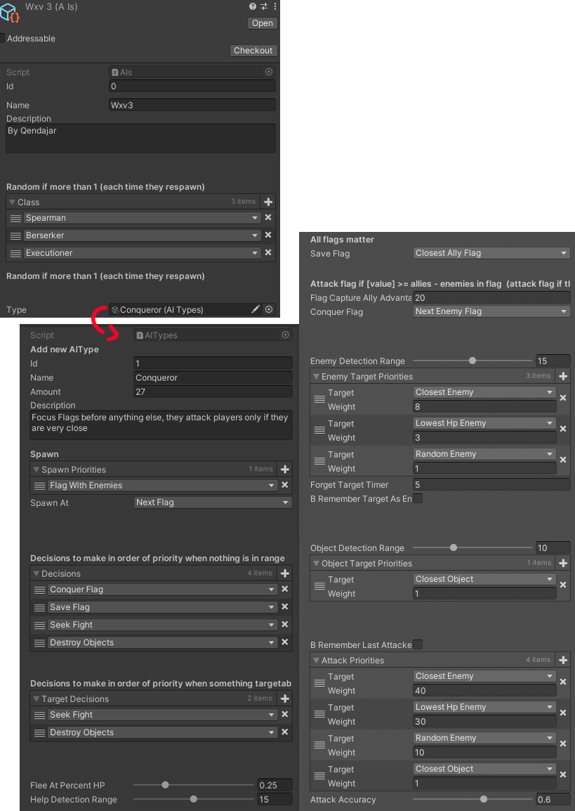
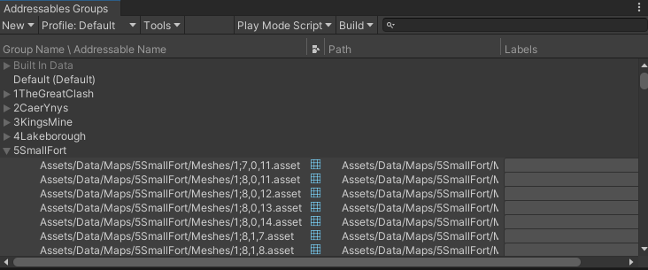

Tales of War
Projet personnel volontaire pour une petite communauté
Voluntary personal project for a small community
Projet solo fait avec Unity et Netcode for GameObjects. Un projet avec aide récente de quelques personnes (voir équipe tout en bas).
Pour une communauté de plus de 1000 personnes qui attend impatiemment le "revival" du serveur Minecraft (The Battle For Conwy Castle).
Sauf que ce "revival" est indépendant de Minecraft.
Solo project made with Unity and Netcode for GameObjects. A project made with recent help from a few people (see the team all the way below).
For a community of more than 1000 people who are eagerly awaiting the revival of their Minecraft server (The Battle For Conwy Castle).
Except this revival is independent from Minecraft.
AIs
AIs

Mes AIs sont très designer friendly. L'un peut simplement créer un nouveau ScriptableObject AI et commencer à définir
comment son AI va se comporter dans le jeu:
My AIs are very customizable. Very desginer friendly. One can simply create a new ScriptableObject AI and start to create
how his AI will behave in the game:

Voici à quoi ressemble le code. Ce n'est pas du visual scripting, les scripts sont écrits en c# en tant que behaviours dans des Animator States.
Here is how the code looks. This is not visual scripting, the scripts are written in c# as a behaviour inside Animator States.
Génération de terrain
Map generation
J'ai développé une génération de terrain qui créer et stock tout les meshes générées dans un adressable asset group. Le but était de générer en chunk,
car dans Unity, chaque mesh ne peut recevoir que 4 lumières et, car je devais stocker les données des voxels sous terre. Plus tard je vais développer
des catapultes qui vont détruire et révéler les voxels cachés.
I developed a map generation that creates and stores all generated meshes in an addressable asset group. The goal was to generate in chunks,
because in Unity, each mesh can only receive 4 lights. I also wanted to store voxel data hidden underground: I will later develop catapults that
will destroy and reveal those hidden voxels.

Une fois le terrain généré, mon code ne fait que charger les chunks nécessaires au joueur. Un joueur n’aura jamais besoin de générer un terrain en entier.
Il a seulement besoin de charger ce dont il a besoin de voir.
Once a map has generated, all my code does now is load the chunks that are needed for the player to see. A player will never have to generate a whole map.
They only need to load what they need to see.

Pour load une scene plus rapidement et occuper moin d'espace dans la mémoire, tous les meshes sont stockés sous forme d'adressable assets:
To have faster loadings and occupy less space on the memory, all meshes are stored as adressable assets:

Ajouter un nouveau terrain jouable dans Tales of War est aussi simple que de drag n drop un fichier de données de voxel(dans lequel contient des données de positions de voxel),
générer les meshes une fois, placer manuellement au moins 2 drapeaux de couleurs différentes et les ajouter aux terrains jouables/votables. Mon code ajustera automatiquement la position
et la fonctionnalité des drapeaux UI sur la carte et la mini-map.
Adding a new playable terrain in Tales of War is as simple as drag and dropping a voxel data file, in which contains data of voxel positions, generating the meshes once,
manually placing at least 2 flags of different colors and adding it to the playable/votable maps. My code will automatically adjust the position and functionality of the
UI flags in the map and the minimap.

Le mesh du AI pathfinding est automatiquement baked du côté du serveur dès qu'un chunk est rendu.
The AI pathfinding mesh is automatically baked on the server side as soon as a chunk has been rendered.
Personnages
Characters
Il y a un seul character controller pour 40 personnages (Je peut créer de nouveaux personnages en créant un nouveau ScriptableObject de personnage).
Le but est de répliquer un pvp similaire à Minecraft mais plus dynamique et personnalisable, car la communauté préfère les combats rapides et qui nécessitent des compétences de visée.
There's only one character controller for 40 characters (I can create new characters by creating a new character ScriptableObject).
The goal is to replicate a Minecraft-like pvp but more dynamic and customizable, as the community prefers fast-paced combat that requires aiming skills.

Armes
Weapons
Les armes et les personnages sont des ScriptableObjects. Un personnage contient des armes (la barre UI des armes est automatisée et très flexible)
et les armes contiennent des clics de souris (clics gauche et droit). Un clic contient un comportement d'arme.
Il peut s'agir d'une attaque melee, d'une attaque projectile, d'un objet plaçable ou d'un objet utilisable.
Je peux donc facilement créer une épée dans laquelle son clic gauche sert à poser l'épée au sol et le clic droit à lancer l'épée. Voici des exemples :
Weapons and Characters are ScriptableObjects. A character contains weapons (hotbar UI is automated and very flexible),
and weapons contain mouse clicks, left and right click. A click contains a weapon behaviour. It could be a melee attack, a projectile attack,
a placable object or a useable object. So I can easily create a sword in which its left click is to place the sword on the ground and the right click
to throw the sword. Here are examples:
Regles du jeu / Gameplay
Gamerules / Gameplay
Le jeu permet au joueur d'apparaitre dans un drapeau de sa couleur (les cercles dans la carte). Il y a un timer et une condition de
victoire qui est de capturer tous les drapeaux et à la fin d'une partie, les joueurs peuvent voter pour le prochain terrain.
The game allows the player to spawn in a flag of his color (the circles in the map). There's a timer and a win condition: to capture
all flags. At the end of a game players can vote for the next map.

Les joueurs peuvent aussi jouer au gamemode ARENA, dans lequel ils peuvent s'affronter en duel ou en équipe.
Il y a 4 arènes et chaque arène a un terrain aléatoire sélectionnée automatiquement.
Le premier joueur à rejoindre une arène peut choisir le nombre de joueurs qu'il veut à l'intérieur.
La règle : éliminer l’équipe ennemie sous un. Des règles plus amusantes seront ajoutées pour équilibrer le mode de jeu.
Players can also play the ARENA gamemode, in which they can duel or team battle anyone they want in the server.
There's 4 arenas and each arena has a random map automatically selected.
The first player to join an arena gets to choose how many players they wants inside.
The rule: eliminate the enemy team under a time limit. More fun rules will be added to balance the gamemode.

Le jeu prend compte de tous les dégat et kills des joueurs. Cette fonctionnalité est nécessaire pour avoir le système d'assist ou pour les statistiques Steam.
The game takes into account all damage and kills from players. This feature is necessary to have things like the assist system and to store Steam statistics.
Serveurs
Servers
Grâce à Steam Lobbies, les joueurs peuvent héberger leurs propre serveur Tales of War avec plein de paramêtres. L'adresse IP, le nombre de joueurs
et la région est sauvegragé comme information visible d'un lobby.
Thanks to Steam Lobbies, players can host their own Tales of War server with many settings. The IP address, number of players and region are saved as visible lobby information.
Gameplay
Gameplay
Équipe
Team
David Dias - Chef, Programmeur, Intégrateur, UI, SFX, VFX, Marketing, Modelisation/Animation personages et armes
David Dias - Leader, Programmer, Integrator, UI, SFX, VFX, Marketing, Character and Weapons Modeling/Animation
Archibald Ducher - SFX, Modelisation de personages/Arena Maps
Archibald Ducher - SFX, Character Modeling, Arena Maps Modeling
Arnaud Léveillé - Écrivain du mode histoire
Arnaud Léveillé - Story mode writer
Christian Kobayashi - Musique
Christian Kobayashi - Music
Adib Benchekroun - Animations des personnages
Adib Benchekroun - Character Animations
Jean-Philippe Filiatrault - Programmeur de jouabilité
Jean-Philippe Filiatrault - Gameplay programmer
La communauté - Modelisation des terrains du mode Siege
The community - Siege Maps Modeling